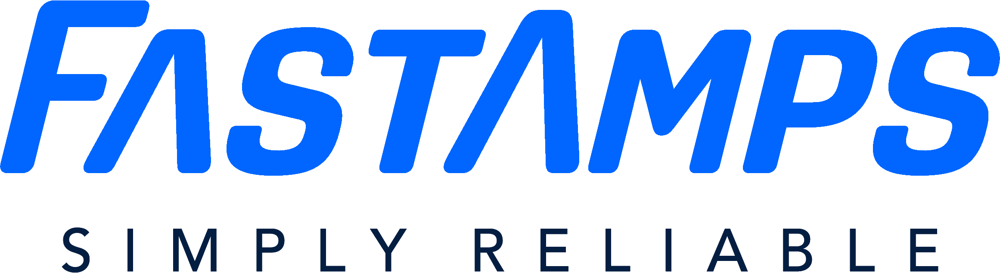

A · Current tight glow
AvoidSingle short, bright shadows. Looks stuck / childlike.
filter: drop-shadow(0 0 1px rgba(80,180,255,.95)) drop-shadow(0 0 2px rgba(0,140,255,.9)) drop-shadow(0 0 4px rgba(0,102,255,.85));
The wordmark is strong. The current glow hugs the letter edges too tightly with high opacity — so it reads as a hard outline stamped on the page. Soft, organic glow needs long falloff, low edge opacity, and light that bleeds into the background.
Short radius + bright edge = outline, not light.

Near core + far atmosphere — light radiates into the navy field.
Click a method · brand blue #0066FF
Copy the CSS that fits your stack
Single short, bright shadows. Looks stuck / childlike.
filter: drop-shadow(0 0 1px rgba(80,180,255,.95)) drop-shadow(0 0 2px rgba(0,140,255,.9)) drop-shadow(0 0 4px rgba(0,102,255,.85));
Stack 3–4 shadows: blur grows, opacity falls. Instant upgrade.
filter: drop-shadow(0 0 2px rgba(0,102,255,.35)) drop-shadow(0 0 8px rgba(0,102,255,.28)) drop-shadow(0 0 22px rgba(0,102,255,.22)) drop-shadow(0 0 48px rgba(0,80,220,.16));
A blurred radial ellipse behind the mark — light in the room, not on the glyphs.
/* wrapper::before */ background: radial-gradient(ellipse, rgba(0,102,255,.34), transparent 78%); filter: blur(18px); /* logo */ filter: drop-shadow(0 0 10px rgba(0,102,255,.18));
True Gaussian scatter via feGaussianBlur — softest letter-edge bleed.
<filter id="svg-bloom"> <feGaussianBlur stdDeviation="18" /> <feGaussianBlur stdDeviation="6" /> <!-- tint + merge under SourceGraphic --> </filter> filter: url(#svg-bloom);
Blurred duplicates behind a sharp logo: near glow + far atmosphere. Pro backlit look.
/* far: blur(28px) opacity .55 scale 1.04 */ /* near: blur(8px) opacity .40 */ /* sharp logo on top, tiny 1.5px brand tint */
Same soft bloom with a slow 4.5s pulse — presence without neon-club energy.
animation: breath 4.5s ease-in-out infinite; /* animate blur radii + opacities gently */
#0066FF — avoid bright cyan outlines